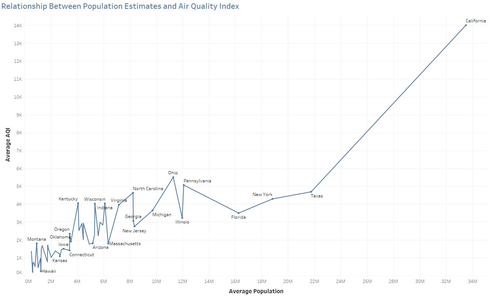
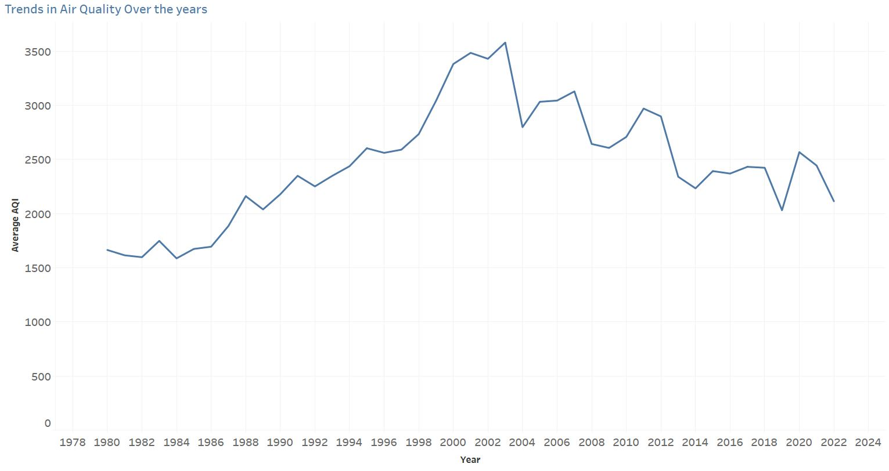

USA Air quality Index By State 1980-2022
Air Quality Insights Dashboard.
1.Introduction
Welcome to my data analysis portfolio, where I delve into the intricate dynamics of air quality using a comprehensive dataset. This exploration focuses on revealing key insights and trends in air quality conditions, utilizing statistical analyses and visualizations. I've utilized a comprehensive dataset from Kaggle
2.Project Overview
2.1 Objective
This project aims to uncover relationships between population estimates and air quality, compare good vs unhealthy days across states, analyze overall air quality trends, and break down air quality metrics by state. The dataset under consideration provides a wealth of information spanning multiple years..
2.2 dataset
The dataset, available on Kaggle , spans from 1980-2022, providing a perspective on air quality in the united states.
3. SQL codes
3.1 Relationship Between Population Estimates and Air Quality Index
To understand the connection between population estimates and air quality, I calculated the correlation coefficient between the "Pop_Est" and "Median_AQI" columns using SQL as described in the table SQL below.
The coefficient of 0.7694 indicates a strong positive relationship, suggesting that as population estimates increase, the air quality index tends to rise as well. This emphasizes the significant impact of population density on air quality.
I also copmare the average population with the average max air quality index (AQI) in each states using SQL as described in the SQL table and depicted in Figure 1.
#SQL:Relationship Between Population Estimates
and Air Quality Index
--correlation coefficient between the Max_AQI and Pop_Est
select
correl(Pop_Est, Median_AQI) As CorrelationCoefficient
from dbo.['AQI By State 1980-2022$']
--Average AQI and average population for each state
SELECT
State,
AVG(Max_AQI) AS Average_AQI,
AVG(Pop_Est) AS Average_Population
FROM
dbo.[AQI By State 1980-2022$']
GROUP BY
State
ORDER BY
State;
# Figure 1:Relationship Between Population Estimates
and Air Quality Index

3.2 Overall Air Quality Trends:
Analyzing average AQI values over the years reveals fluctuations, indicating variations in air quality. Peak years, such as 1999-2001, show potential challenges, while periods like 2004 and 2013 exhibit improvements depicted in Figure 2. Recent years (2020-2022) suggest a potential increase, emphasizing the need for further investigation. Overall, understanding the long-term trend is crucial for effective air quality management.
SQL: trends in air quality over the years:
SELECT
Year,
cast (avg(Max_AQI) as decimal (10,2)) AS Average_AQI
FROM
dbo.['AQI By State 1980-2022$']
GROUP BY
Year
ORDER BY
Year;
#Figure 2 trends in air quality over the years
4.Insights and observations
Key Observations:
- The average Air Quality Index (AQI) has varied significantly over the years.
- Peak years include 1999, 2000, and 2001, with higher average AQI values.
- Improvements are evident in 2004 and 2013.
- Recent years (2020-2022) show potential fluctuations and require further investigation.
Relationship Between Population Estimates and AQI:
- Correlation Coefficient: 0.7694
- Insight: A strong positive correlation indicates that as population estimates increase, the air quality index tends to rise.
See the complete Air quality Index By State 1980-2022 Dashboard by clicking here..